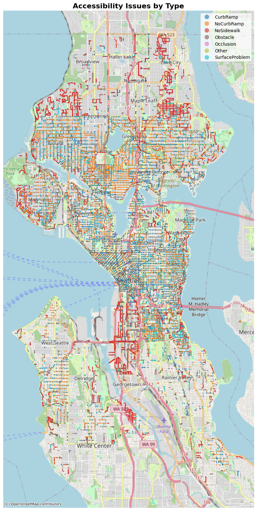
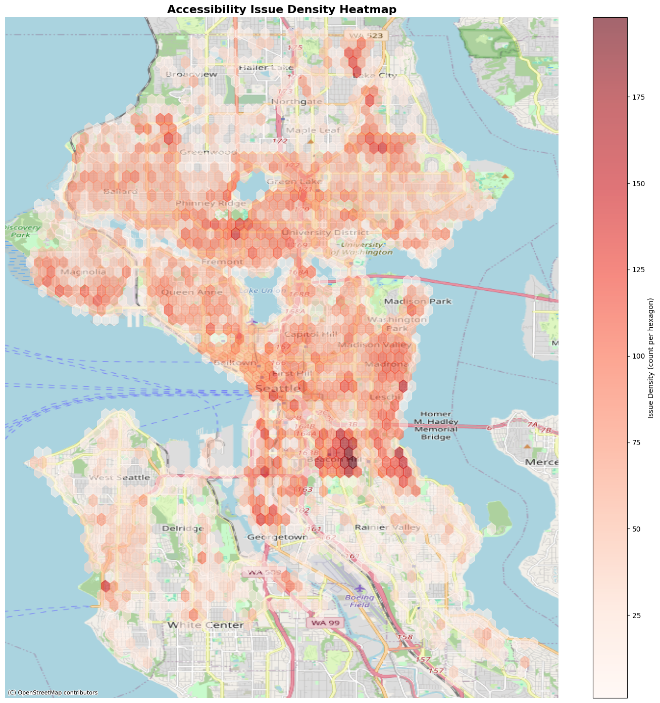

Introduction
Sidewalk accessibility in Seattle varies widely, creating challenges
for wheelchair users, seniors, and pedestrians navigating the city.
Missing curb ramps, sidewalks, and other obstacles can slow
movement or make travel unsafe. Our project leverages the Project
Sidewalk dataset to identify these mobility friction zones, quantify
the severity of sidewalk issues, and compute accessibility scores
for different neighborhoods. By mapping and analyzing this data,
we aim to highlight patterns of infrastructure inequity and provide
actionable insights for city planners to improve pedestrian
accessibility and safety.
Plotting the Data
We started our analysis by plotting all the given data points on a map
of Seattle, with each color representing a different type of issue.
This allowed us to get a broad understanding of the dataset and how
the issues were spread throughout Seattle.

This map categorizes sidewalk accessibility issues by type, using different colored dots to represent
missing curb ramps, missing sidewalks, and other common problems.
Average Severity per Issue Type
This visualization shows the average severity of reported accessibility issues by issue type,
helping identify which issues have the biggest impact on mobility.
Comparing Issue Counts and Density Across Neighborhoods
We compared the total number of accessibility issues per neighborhood
with the density heat map of all reported problems. This allowed us to
see not only which neighborhoods had the highest number of issues but
also how concentrated these problems were within each area, providing
a more nuanced understanding of mobility challenges across the city.
This visualization shows the total number of reported accessibility issues across neighborhoods,
highlighting areas with the highest concentration of concerns.

This density heat map visualizes clusters of reported sidewalk accessibility issues,
with darker regions indicating higher concentrations of problems.
Severity Score
To understand and compare sidewalk accessibility across Seattle
neighborhoods, we created a severity score: a single, composite
metric that captures both the number of reported issues and their
impact on mobility and safety. Using a simple average severity alone
doesn’t account for how concentrated the problems are or how many are
high-risk. The severity score solves this by combining three key factors
into a 0–100 scale:
- Average Severity (40%): the mean of all issue ratings (1–4 scale), scaled to 0–40 points.
- Issue Density (30%): the number of issues in the neighborhood relative to the maximum, scaled to 0–30 points.
- High-Severity Percentage (30%): the proportion of issues rated 3 or 4, scaled to 0–30 points.
This formula allows neighborhoods to be ranked consistently, highlighting areas with the most significant accessibility challenges and helping prioritize interventions.
Severity Score per Neighborhood
This visualization shows the calculated severity scores for each neighborhood, combining the number, density, and severity of sidewalk accessibility issues to highlight priority areas.
Putting It All Together
This interactive map colors the neighborhoods based off of their Severity
Score, telling us that the Industrial District has the overall worst
sidewalk conditions. The map also includes lots of other information,
including total issues, average severity, high severity count (# of
issues with severity >= 3), high severity percentage, most common issue,
and most common issue count.
Top and Bottom 5 Neighborhoods by Severity Score
This visualization highlights the five neighborhoods with the highest (least accessible area) and lowest (most accessible area) severity scores, helping identify areas in greatest need of sidewalk accessibility improvements.
Discussion
Summary of Findings
Our results show that there is substantial variation in sidewalk quality
across Seattle. While density maps highlight a large concentration of
reports near Beacon Hill, the Severity Score reveals the Industrial
District as the most critically underserved neighborhood. This area not
only contains the highest total number of reported issues of over 11,000,
but also has the highest Severity Score, indicating that its
infrastructure conditions are consistently more severe than in other
parts of the city. In addition, our breakdown by issue type shows that
although curb ramps are the most frequently reported category,
“No Sidewalk” represents the most severe barrier overall, with the
highest average severity.
Strategic Recommendations
- First, resources should be immediately directed to the
Industrial District. Its Severity Score of 85.1 significantly exceeds
the second least accessible area, Ravenna, which has a Severity Score
of 71. Therefore, the Industrial District requires the most attention
regarding infrastructure improvement.
- Additionally, the city should prioritize projects relating to the
installation of sidewalks and curb ramps. Because the issues
"No Sidewalk" and "No Curb Ramp" have the highest average severity
ratings, therefore improvements in these areas will likely produce
the greatest impact on safety and accessibility.
- Finally, we believe that future funding should be allocated based on
our calculated Severity Score rather than just complaint volume.
While areas like the Central Business District are highly populated,
they have some of the lowest Severity Scores. This ensures that
neighborhoods with fewer voices but worse conditions,
like the Industrial District, are not overlooked.